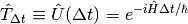
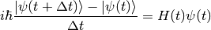
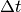
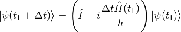
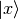
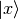

Symmetries in QM¶
The Invariant Quantity¶
First of all I want to know what is not changed or what is the invariant quantity in a transformation.
There are three kind of common transformations.
- Time translation: move the system in time. In this sense time translation is just the time evolution operator or propagator.
- Space translation: move the system in space.
- Gauge transformation
The invariance of them corresponds to:
- Time translation invariance (T.T.I.) means the evolution of the system is not changing under time translations. Hamiltonian is invariant.
- Space translation invariance (S.T.I.) means that the
Time Translation Symmetry¶
T.T.I. is generated by Hamiltonian which can be easily understood by looking into Shcrödinger equation.
The logic is to prove that Hamiltonian is time independent by using infinitesimal time translation approach. Given that Hamiltonian is time independent, we imediately know that time translation operator is just the propagator with the form

All other conclusions come from the fact that Hamiltonian is a constant of motion.
Hint
Starting from Schrödinger equation,

Then we get the state after a evolution of time ,

Time translation symmetry means the state evolution in the same time interval no matter when to start the evolution. Mathematically,

should get the same final state if we start from some other time  ,
,

That means the two Hamiltonian should be the same. Now we reach the conclusion that Hamiltonian is time independent.
Hint
Ehrenfest theorem tells us that time independent Hamiltonian is a constant of motion.
![\frac{d}{dt}\avg{H} = \frac{1}{i\hbar}\avg{[\hat H, \hat H]} + \avg{\frac{\partial}{\partial t} H } = 0](_images/math/f63998594462105f6ecb19bcfb6c60968640ef76.png)
Important
For an isolated system, T.T.I. should always be satisfied because there is nothing more else to change the system but to leave the system with energy conserved.
My concern is if we don’t have an Hamiltonian for  , we can’t actually says this because of what the second law of thermodynamics tells us.
, we can’t actually says this because of what the second law of thermodynamics tells us.
Space Translation Symmetry¶
S.T.I. is generated by canonical momentum. This is not so obvious as time translation. To prove this we need to understand what space translation really means.
Space translation means we change the position of the system by some spatial distance  . In math this means a transformation from  to
. In math this means a transformation from  to  where the plus sign is by definition. We invent this space translation operator,
where the plus sign is by definition. We invent this space translation operator,

Next we can obtain the result of space translation operator applied to state in position basis

where we used the relation

which of course is because the normalization of coordinate basis tells us that space translation operator is unitary.